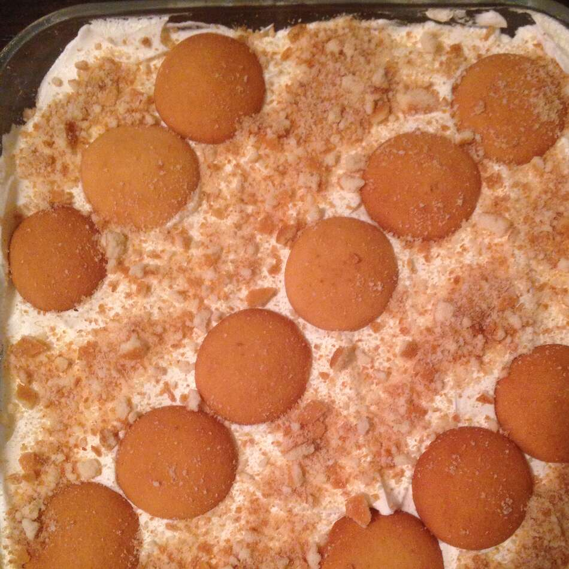

Banana Pie

Servings: 10
Yield: 10 servings
Ingredients
1 1/2 cups graham cracker crumbs
1/4 cup white sugar
1/3 cup butter, melted
5 bananas (Optional)
1 (3 ounce) package cream cheese,softened
2 (3.5 ounce) packages instant banana pudding mix
3 1/2 cups milk
1 (8 ounce) container frozen whipped topping,thawed
2 bananas,sliced (Optional)
1 tablespoon lemon juice (Optional)
Steps (Directions)
In a medium bowl, mix graham cracker crumbs and sugar. Stir in melted butter. Mix thoroughly, then press mixture into bottom of a 9x13 inch pan.
Cut bananas into 1/4 inch slices and make a single layer of banana slices on graham cracker crust. Reserve remaining banana slices.
In a large mixing bowl, whip cream cheese until fluffy. Add pudding mix and whip mixture until smooth. Add milk and mix until all ingredients are thoroughly combined. Pour mixture over layer of bananas.
Make another layer of banana slices on top of pudding layer. Cover bananas with whipped topping. Refrigerate at least 3 hours before serving. If using banana slices for garnish, toss with lemon juice to prevent browning.
HOME